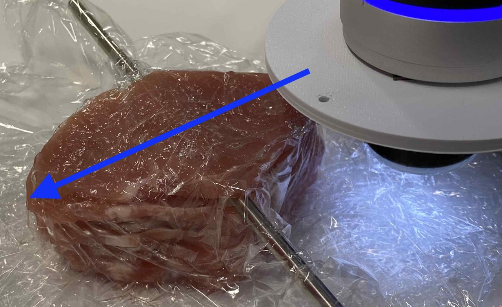

Toward Trustworthy Robot-Assisted Sliding Palpation for Shallow Vessel Localisation with a Calibrated Digital Twin
Abstract
Reliable localisation of shallow subsurface vessels matters for safe robot-assisted venous access and vessel-aware manipulation, but collecting diverse tactile data on physical hardware is costly, slow, and can degrade soft vision-based tactile sensors. We present a robot-assisted sliding-palpation framework in which a calibrated digital twin generates labelled tactile sequences, reducing dependence on real-world data collection. The twin models sensor–vessel contact, is calibrated against real palpation trajectories by Bayesian-optimisation-based domain adaptation, and is randomised over sliding direction and contact conditions. A spatio-temporal graph neural network trained on simulated marker trajectories performs per-node vessel classification and yields a human-verifiable top-view localisation map through 2D-to-3D-to-2D geometric projection. Using three datasets (Sim, Silicone, and Meat, the latter a raw-meat phantom with vessel models at depths of 0–30 mm) we evaluate four [train]→[test] models: Sim→Sim, Sim→Silicone, Sim→Meat, and Meat→Silicone. The calibrated twin, validated on four canonical interactions, yields a simulated-to-real marker-alignment MAE of 0.50 mm at the point of deepest contact. After reprojection onto a 1 mm top-view grid, with each model's decision threshold set to favour few false alarms over high sensitivity, predicted vessel pixels lie on average 1.05–5.49 mm from the nearest true vessel pixel across the four models (1.05–1.31 mm for all but Sim→Meat, whose larger domain shift marks the current limit of simulation transfer). These results demonstrate progress toward trustworthy tactile palpation through calibrated simulation, interpretable localisation, and transparent reporting of cross-domain degradation. Code, model weights, and data are publicly available on GitHub and Zenodo.
Videos: simulator, datasets and predictions
From the shallow-vessel-palpation-simulator-and-AI repository (videos/).
Simulator: the four sensor–phantom interactions
Recorded from the digital twin's own camera at the calibrated parameters. Sensor green, phantom blue, vessel yellow.
Annotated real datasets
Every frame of every recording, stepped through with the annotation viewers. Silicone: the clicked vessel points. Meat: per-marker labels (red = vessel present, green = absent).
Per-frame GNN predictions
The prediction viewer on each model's best-of-five instance: ground truth, hard prediction, confusion (green = both say vessel, red = missed vessel, blue = false alarm, grey = neither), soft prediction, metadata. Every central frame of every trial for the real datasets; ten randomly drawn held-out trajectories for Sim → Sim.
Video: experimental data collection
From the shallow-vessel-palpation-robot-control repository (videos/).

Code and data
- github.com/piotr-blaszyk/shallow-vessel-palpation-simulator-and-AI — main repository: digital twin, domain adaptation, dataset generation, GNN training and evaluation, all figures and tables.
- github.com/piotr-blaszyk/shallow-vessel-palpation-robot-control — robot control and synchronised tactile-video capture on the DOBOT Magician E6.